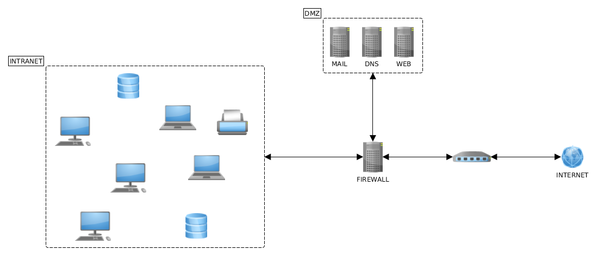
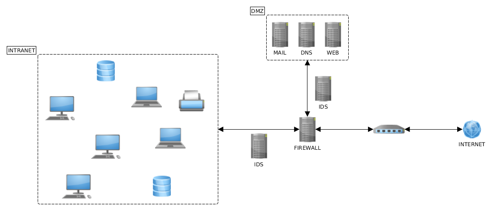
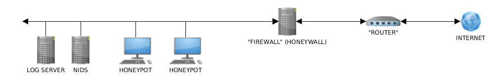

Sare Segurtasuna
Mikel Egaña Aranguren
mikel-egana-aranguren.github.io

Mikel Egaña Aranguren
Mikel Egaña Aranguren
mikel-egana-aranguren.github.io
https://doi.org/10.5281/zenodo.4302267
https://github.com/mikel-egana-aranguren/EHU-issks-31


IP helbideak esleitu eta bideratzea sareetan
Adibidea: 192.168.1.0/24
sarea: 192.168.1.0 - 192.168.1.255 / host edo azpisarea 192.168.1.1 - 192.168.1.254
Sare-maskara (router-ak sare batetik bestera): 255.255.255.0
Segmentazio fisikoa
Segmentazio logikoa VLAN bidez (OSI 2. geruza): gailuak funtzionalitatearen arabera taldekatu
Segmentazio logikoa azpisareen bidez (OSI 3. geruza): sarea azpisare txikiagoetan banatzea (IP helbideen barrutia)
Firewall arauen helburuak tag-en bidez definitzen dira (adib. http-server, https-server) CIDR blokeen ordez

Aurrez definitutako arauen arabera sarearen sarrerako eta irteerako trafikoa kontrolatzen duen gailua/softwarea
Arauak segurtasun-irizpide desberdinetan oinarritzen dira
Paketeen iragazketa: pakete bakoitza aztertu eta arauekin konparatzen du
Sarbide-kontrola: zerbitzu edo protokoloetarako sarbidea baimentzen edo ukatzen du
Erregistroa eta auditoretza
NAT (Network Address Translation): hainbat gailuk IP helbide publiko bakarra partekatzen dute
VPN (Virtual Private Network)*
IDS/IPS
Packet Filtering Firewalls: Sareko paketeen goiburuak bakarrik aztertzen dituzte eta trafikoa baimentzen edo blokeatzen dute: jatorriko eta helmugako IPa, erabilitako portuak eta protokoloak
Stateful Inspection Firewalls: Paketeen goiburuak aztertzeaz gain, sareko konexioen egoeraren jarraipena egiten dute. Paketeen edukia azter dezakete eta konexioaren egoeran oinarritutako erabakiak hartu
Application Firewalls (Proxy Firewalls): Trafikoa aztertzen dute, aplikazio-protokolo zehatzak barne, hala nola HTTP, FTP edo SMTP. Mezuen edukia aztertzen dute eta segurtasun-arau aurreratuagoak aplikatzen dituzte aplikazioen mehatxu zehatzak detektatu eta blokeatzeko
Difusio-helbidea (Broadcast) duten paketeak blokeatu, DoS erasoak saihesteko
Barne-helbideei dagozkien jatorrizko helbideak dituzten sarrerako paketeak blokeatu, nortasun-ordezkapena (Spoofing) saihesteko
Blokeatu RFC 1918 (Address Allocation for Private Internets) dokumentuan aipatutako helbide pribatuak dituzten sarrerako pakete guztiak
127.0.0.1 jatorrizko helbide gisa duten sarrerako paketeak blokeatu
Ping edo Traceroute eskaerei erantzunez barne-sarearen topologiari buruzko informazioa eman dezaketen ICMP kontrol-protokoloko paketeak blokeatu
Routerren bideratze-taulak aldatzeko aukera ematen duten ICMP Redirect paketeak blokeatu
Baimendutako gutxienekoa baino tamaina txikiagoa duten edo goiburuan balio baliogabeak dituzten pakete guztiak blokeatu
Urruneko konexioa: Telnet (23), SSH (22), FTP (21)
RPC (Remote Procedure Call) eta NFS (Network File System) zerbitzua UNIX sareetan
HTTP, SSL, SMTP, POP, IMAP, DNS, LDAP zerbitzari gisa aritzen ez diren makinetan
Intranetaren eta Interneten arteko azpisarea, segurtasun-arazoen eraginpean gehien dauden zerbitzu publikoak (posta, ftp, etab.) kokatzen diren lekua
Firewall bat edo bi erabiliz sortzen da
DMZtik ezin da zuzenean intranetera sartu

Sareko trafikoa zerbitzari batzuen artean banatzea zerbitzuen errendimendua eta erabilgarritasuna hobetzeko
Bezeroen eta zerbitzarien arteko bitartekaria
Aplikazio-maila (HTTP) edo garraio-maila (TCP/UDP)
Karga-banaketa
Akatsekiko tolerantzia
Eskalagarritasuna
Saioen kontrola
Errendimenduaren optimizazioa
Bitartekari gisa jarduten duen aplikazioa
Bezeroak proxy-ari egiten dizkio eskaerak, eta honek kudeatu eta urruneko zerbitzariei bidaltzen dizkie
Segurtasun handiagoa ematen du nabigazioan, zerbitzariak ez baitaki nor konektatu den benetan
Zerbitzariaren erantzunak cache-an gordetzea
Sareko trafikoa iragaztea nahi ez den edukia saihesteko
Webguneetarako sarbidea
Edukiaren iragazketa
Cache-an gordetzea
Garraio-mailako proxy-a
SOCKS protokoloaren bidezko konexioa ahalbidetzen du
Sareko trafikoaren bideratzea
Anonimotasuna
Zerbitzari aldea
Karga-banaketa
Azpiegituraren babesa
IDS (Intrusion Detection System): intrusioak detektatzeko sistema
IPS (Intrusion Prevention System): intrusioak prebenitzeko sistema
Host (HIPS, HIDS) edo Network (NIPS, NIDS)
Heuristika (Arauak): ezagutzen diren erasoak bakarrik. Positibo faltsu batzuk.
Anomaliak: portaera-profila. Eraso berriak. Positibo faltsu gehiago.

"Amua" sistema, eraso diezaioten
Honeynet: honeypot-en sarea
Erasoak desbideratu
Erasoei buruzko ezagutza lortzea
Malware-aren laginak lortzea

127.0.0.1 user-identifier frank [10/Oct/2000:13:55:36 -0700]
"GET /apache_pb.gif HTTP/1.0" 200 2326
127.0.0.1 user-identifier frank [10/Oct/2000:13:55:36 -0700]
"GET /apache_pb.gif HTTP/1.0" 200 2326